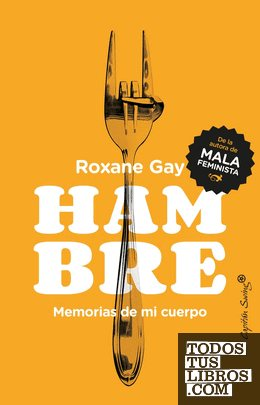

HambreRoxane Gay

Hambre
Roxane Gay
Memorias sobre el cuerpo, el peso y cómo una experiencia dolorosa marcó su relación con la comida.
- Publicado originalmente
- 2017
- Enfoque
- Testimonio
- Para quién
- Público general
- Ficha bibliográfica
- Todos tus libros (CEGAL)
Este libro tiene derechos de autor, así que no lo alojamos. Te dejamos la ficha para que sepas de qué trata y lo busques en una librería o biblioteca.
Alimentación y conducta alimentariaImagen corporalEstigma relacionado con el pesoRelatos de vida y psicología narradaMemorias y autobiografías